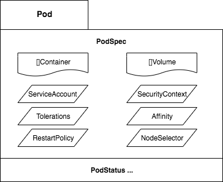

Lets take a look in the default Kind definition of the Pod, with this we can enumerate all the fields and attached capabilities of the Pod. For this post only the main Spec of the Pod object is going to be detailed with examples and tasks, we let the container configuration for other posts. Get after it.

PS: The detailing and lab section above extracts text, insights and possible examples from the links in the Spec struct.
// PodSpec is a description of a pod.
type PodSpec struct {
// List of volumes that can be mounted by containers belonging to the pod.
// More info: https://kubernetes.io/docs/concepts/storage/volumes
Volumes []Volume `json:"volumes,omitempty"`
// List of initialization containers belonging to the pod.
// Init containers are executed in order prior to containers being started. If any
// init container fails, the pod is considered to have failed and is handled according
// to its restartPolicy.
// More info: https://kubernetes.io/docs/concepts/workloads/pods/init-containers/
InitContainers []Container `json:"initContainers,omitempty"`
// List of containers belonging to the pod.
// Containers cannot currently be added or removed.
// There must be at least one container in a Pod.
Containers []Container `json:"containers"`
// More info: https://kubernetes.io/docs/concepts/workloads/pods/pod-lifecycle/#restart-policy
RestartPolicy RestartPolicy `json:"restartPolicy,omitempty"`
// NodeSelector is a selector which must be true for the pod to fit on a node.
// More info: https://kubernetes.io/docs/concepts/configuration/assign-pod-node/
NodeSelector map[string]string `json:"nodeSelector,omitempty"`
// ServiceAccountName is the name of the ServiceAccount to use to run this pod.
// More info: https://kubernetes.io/docs/tasks/configure-pod-container/configure-service-account/
ServiceAccountName string `json:"serviceAccountName,omitempty"`
// SecurityContext holds pod-level security attributes and common container settings.
SecurityContext *PodSecurityContext
// If specified, the pod's scheduling constraints
Affinity *Affinity
// If specified, the pod's tolerations.
Tolerations []Toleration
}On-disk files in a container are ephemeral, which presents some problems for non-trivial apps when running in Containers. If the file is created inside the container and it dies, the file is deleted with it. Volumes are an abstraction of this filesystem layer that allows to not only save files but share data between Pods.
To use a volume, a Pod specifies what volumes to provide for the Pod (the .spec.volumes field) and where to mount those into Containers (the .spec.containers[*].volumeMounts field).
Lets focus in the definition of a volume for now.
// Volume represents a named volume in a pod that may be accessed by any container in the pod.
type Volume struct {
// Volume's name. Must be a DNS_LABEL and unique within the pod.
// More info: https://kubernetes.io/docs/concepts/overview/working-with-objects/names/#names
Name string `json:"name"`
// VolumeSource represents the location and type of the mounted volume.
VolumeSource `json:",inline"`
}
// https://github.com/kubernetes/kubernetes/blob/master/staging/src/k8s.io/api/core/v1/types.go#L51
// Represents the source of a volume to mount.
// Only one of its members may be specified.
type VolumeSource struct {
// HostPath represents a pre-existing file or directory on the host
// machine that is directly exposed to the container.
// More info: https://kubernetes.io/docs/concepts/storage/volumes#hostpath
HostPath *HostPathVolumeSource `json:"hostPath,omitempty"`
// EmptyDir represents a temporary directory that shares a pod's lifetime.
// More info: https://kubernetes.io/docs/concepts/storage/volumes#emptydir
EmptyDir *EmptyDirVolumeSource `json:"emptyDir,omitempty"`
// PersistentVolumeClaimVolumeSource represents a reference to a PersistentVolumeClaim in the same namespace.
// More info: https://kubernetes.io/docs/concepts/storage/persistent-volumes#persistentvolumeclaims
PersistentVolumeClaim *PersistentVolumeClaimVolumeSource
// Secret represents a secret that should populate this volume.
Secret *SecretVolumeSource `json:"secret,omitempty"`
...
// GCEPersistentDisk represents a GCE Disk resource
GCEPersistentDisk *GCEPersistentDiskVolumeSource `json:"gcePersistentDisk,omitempty" protobuf:"bytes,3,opt,name=gcePersistentDisk"`
// AWSElasticBlockStore represents an AWS Disk resource
AWSElasticBlockStore *AWSElasticBlockStoreVolumeSource `json:"awsElasticBlockStore,omitempty" protobuf:"bytes,4,opt,name=awsElasticBlockStore"`
// NFS represents an NFS mount on the host
NFS *NFSVolumeSource `json:"nfs,omitempty" protobuf:"bytes,7,opt,name=nfs"`
// AzureFile represents an Azure File Service
AzureFile *AzureFileVolumeSource `json:"azureFile,omitempty" protobuf:"bytes,18,opt,name=azureFile"`
...
}Starting the topic with a Volume of Secret type. Use the VolumeMounts inside the container to bring the volume inside the container.
pod.yaml
--
apiVersion: v1
kind: Pod
metadata:
labels:
app: lab1
name: busybox
spec:
containers:
- command:
- sleep
- 9999d
image: busybox
name: busybox
volumeMounts:
- name: secret
mountPath: "/etc/pass"
readOnly: true
restartPolicy: Always
volumes:
- name: secret
secret:
secretName: one-passAfter defining the Volumes using secrets and mounting it inside the container, check the content of the /etc/pass folder.
# kubectl create secret generic one-pass --from-literal=password=1234 --from-literal=password1=5678
secret/one-pass created
# kubectl create -f pod.yaml
# kubectl exec -it busybox cat /etc/pass/password /etc/pass/password1
12345678The PersistentVolume subsystem provides an API for users and administrators that abstracts details of how storage is provided from how it is consumed.
PersistentVolumes are a way for users to “claim” durable storage (such as a GCE PersistentDisk or an iSCSI volume) without knowing the details of the particular cloud environment. The way we claim for a PV is using a persistentVolumeClaim.
The first step is to create a PersistentVolume,
apiVersion: v1
kind: PersistentVolume
metadata:
name: pv-volume
labels:
type: local
spec:
storageClassName: manual
capacity:
storage: 10Gi
accessModes:
- ReadWriteOnce
hostPath:
path: "/opt/data"
--
apiVersion: v1
kind: PersistentVolumeClaim
metadata:
name: pv-claim
spec:
storageClassName: manual
accessModes:
- ReadWriteOnce
resources:
requests:
storage: 3Gi
--
apiVersion: v1
kind: Pod
metadata:
labels:
app: lab1
name: busybox
spec:
containers:
- command:
- sleep
- 9999d
image: busybox
name: busybox
volumeMounts:
- name: vc
mountPath: "/opt/"
volumes:
- name: vc
persistentVolumeClaim:
claimName: pv-claimWe can check the PV, PVC and the mount inside the container, to double test it, create a new directory and check inside the host machine.
# kubectl get pv
NAME CAPACITY ACCESS MODES RECLAIM POLICY STATUS CLAIM STORAGECLASS REASON AGE
pv-volume 10Gi RWO Retain Available manual 4s
# kubectl get pvc
NAME STATUS VOLUME CAPACITY ACCESS MODES STORAGECLASS AGE
pv-claim Bound pv-volume 10Gi RWO manual 4s
# kubectl exec -it busybox bash
$ mkdir /opt/test
# docker exec -it kind-control-plane ls /opt/data/
testNext post.
RestartPolicy describes how the container should be restarted. Only one of the following restart policies may be specified.
Restart policy for all containers within the pod. One of Always, OnFailure, Never. Default to Always.
type RestartPolicy string
const (
RestartPolicyAlways RestartPolicy = "Always"
RestartPolicyOnFailure RestartPolicy = "OnFailure"
RestartPolicyNever RestartPolicy = "Never"
)Getting an example, for a busybox with Always (default) restart and exit 1 command (failure):
$ kubectl run --generator=run-pod/v1 busybox --image=busybox --command -- exit 1
$ kubectl get pods -o jsonpath="{.items[].spec.restartPolicy}"
Always
$ kubectl get pods -o jsonpath="{.items[].status.containerStatuses[].restartCount}"
4
$ kubectl get pods
NAME READY STATUS RESTARTS AGE
busybox 0/1 RunContainerError 4 108sAfter 108 seconds we saw 4 restarts so, exited Containers that are restarted by the kubelet are restarted with an exponential back-off delay (10s, 20s, 40s …) capped at five minutes, and is reset after ten minutes of successful execution.
Looking for one with restart Never:
$ kubectl run --generator=run-pod/v1 busybox --image=busybox --restart=Never --command -- exit 1
$ kubectl get pods -o jsonpath="{.items[].spec.restartPolicy}"
Never
$ kubectl get pods -o jsonpath="{.items[].status.containerStatuses[].restartCount}"
0
$ kubectl get pods
NAME READY STATUS RESTARTS AGE
busybox 0/1 StartError 0 104sThere's one curious constraint within this key, that should be used as best practice
apiVersion: v1
kind: Pod
metadata:
labels:
app: lab1
name: busybox
spec:
containers:
- command:
- sleep
- 9999d
image: busybox
name: busybox
securityContext:
runAsNonRoot: trueThis box runs as root, since we have set the constraint lets take a look in the result:
# kubectl get pods
NAME READY STATUS RESTARTS AGE
busybox 0/1 CreateContainerConfigError 0 39m
# Kubelet logs
kind-control-plane pod_workers.go:191] Error syncing pod xxx ("busybox_default(xxx)"), skipping: failed to "StartContainer" \
for "busybox" with CreateContainerConfigError: "container has runAsNonRoot and image will run as root"Inside the Kubelet we find the verifyRunAsNonRoot, and it returns this message in case of error, the flow for this call is (1.16):
Processes in containers inside pods can also contact the apiserver. When they do, they are authenticated as a particular Service Account (for example, default).
You can change the service account of the pod like:
$ kubectl create sa new-service
# pod.yaml
# serviceAccountName: new-service
$ kubectl get pods -o jsonpath="{.items[].spec.serviceAccountName}"
new-service
$ kubectl auth can-i '*' '*' --as=system:serviceaccount:new-service
no
# You need to set the correct RBAC permissions for this serviceaccount.https://kubernetes.io/docs/concepts/configuration/assign-pod-node/
$ kubectl label nodes kind-worker2 app=lab1
# pod.yaml
# nodeSelector:
# app: lab1
$ kubectl get pods -o wide
NAME READY STATUS RESTARTS AGE IP NODE NOMINATED NODE READINESS GATES
busybox 1/1 Running 0 5s 10.244.1.2 kind-worker2 <none> <none>nodeSelector provides a very simple way to constrain pods to nodes with particular labels. The affinity/anti-affinity feature, greatly expands the types of constraints you can express.
In the example we set a worker node with app=lab3 but do a required affinity of app=lab2, as result the Pod will stay Pending until a node has the new label.
$ kubectl label nodes kind-worker app=lab3 --overwrite
# pod.yaml
# affinity:
# nodeAffinity:
# requiredDuringSchedulingIgnoredDuringExecution:
# nodeSelectorTerms:
# - matchExpressions:
# - key: app
# operator: In
# values:
# - lab2
Pod stays on Pending status
Events:
Type Reason Age From Message
---- ------ ---- ---- -------
Warning FailedScheduling 3s (x2 over 76s) default-scheduler 0/3 nodes are available: 3 node(s) didn't match node selector.Node affinity, described here, is a property of pods that attracts them to a set of nodes (either as a preference or a hard requirement).
Taints are the opposite – they allow a node to repel a set of pods.
$ kubectl taint node kind-worker app=lab2:NoSchedule
$ kubectl create -f pod.yaml # no taint
NAME READY STATUS RESTARTS AGE IP NODE NOMINATED NODE READINESS GATES
busybox 0/1 ContainerCreating 0 2s <none> kind-worker2 <none> <none>
# pod.yaml
# tolerations:
# - key: "app"
# operator: "Equal"
# value: "lab2"
# effect: "NoSchedule"
# Create with correct taint
$ kubectl create -f pod.yaml ; kubectl get pods -o wide
NAME READY STATUS RESTARTS AGE IP NODE NOMINATED NODE READINESS GATES
busybox 1/1 Running 0 5s 10.244.2.6 kind-worker <none> <none>https://kubernetes.io/docs/tasks/administer-cluster/change-default-storage-class/ https://kubernetes.io/docs/tasks/administer-cluster/change-pv-reclaim-policy/ https://kubernetes.io/docs/tasks/inject-data-application/podpreset/ https://kubernetes.io/docs/tasks/configure-pod-container/configure-runasusername/ https://kubernetes.io/docs/tasks/configure-pod-container/quality-service-pod/ https://kubernetes.io/docs/tasks/configure-pod-container/configure-volume-storage/ https://kubernetes.io/docs/tasks/configure-pod-container/configure-projected-volume-storage/ https://kubernetes.io/docs/tasks/configure-pod-container/configure-persistent-volume-storage/ https://kubernetes.io/docs/tasks/configure-pod-container/configure-service-account/ https://kubernetes.io/docs/tasks/configure-pod-container/security-context/ https://kubernetes.io/docs/tasks/configure-pod-container/assign-pods-nodes/ https://kubernetes.io/docs/tasks/configure-pod-container/share-process-namespace/